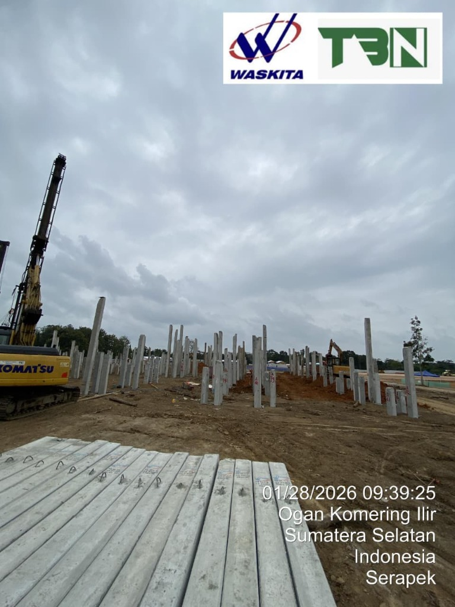
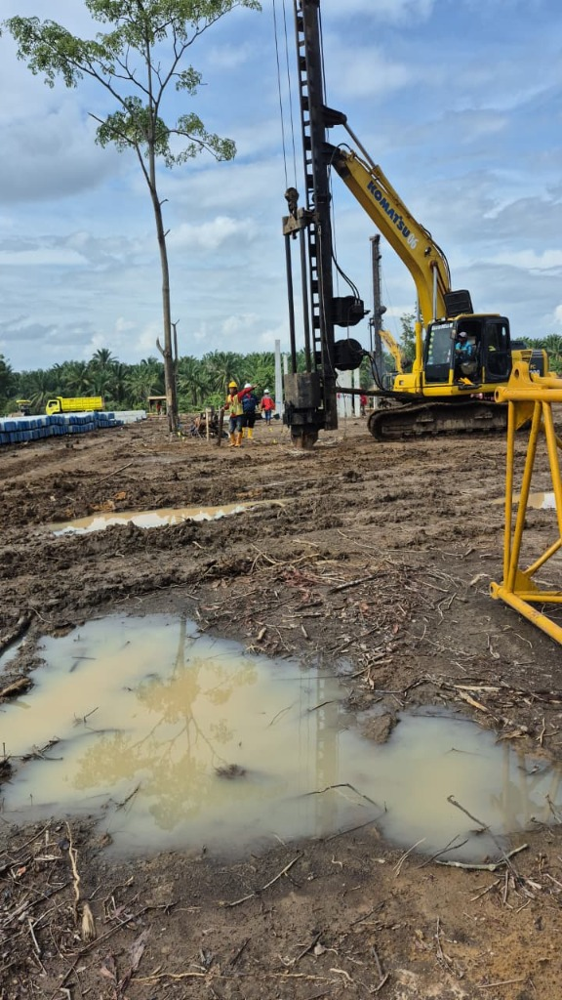
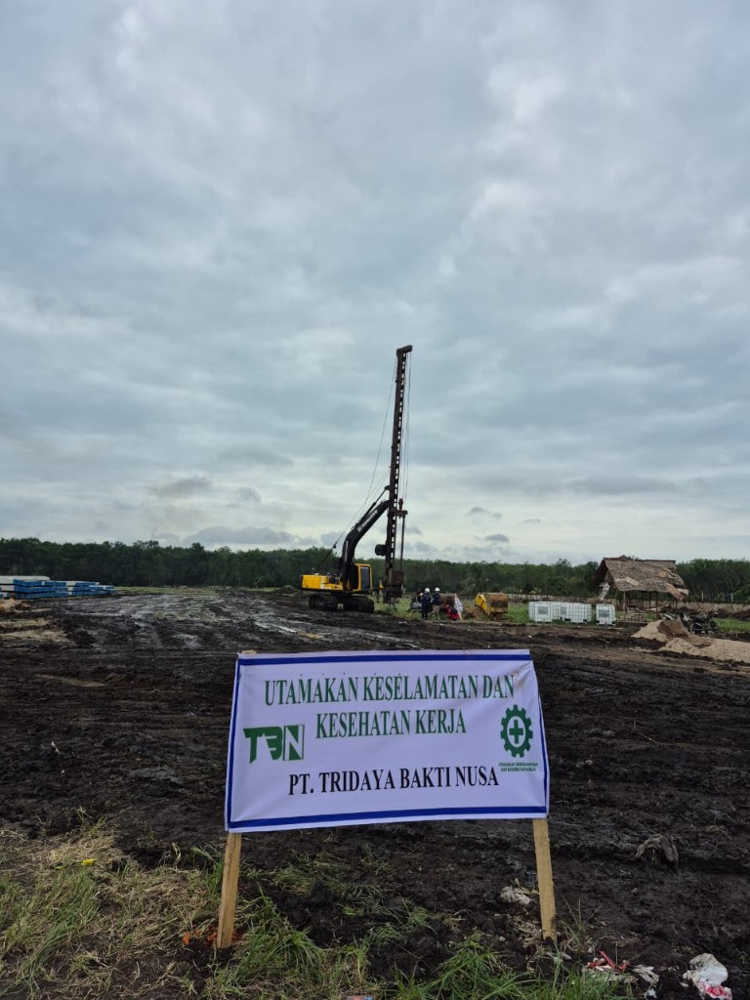
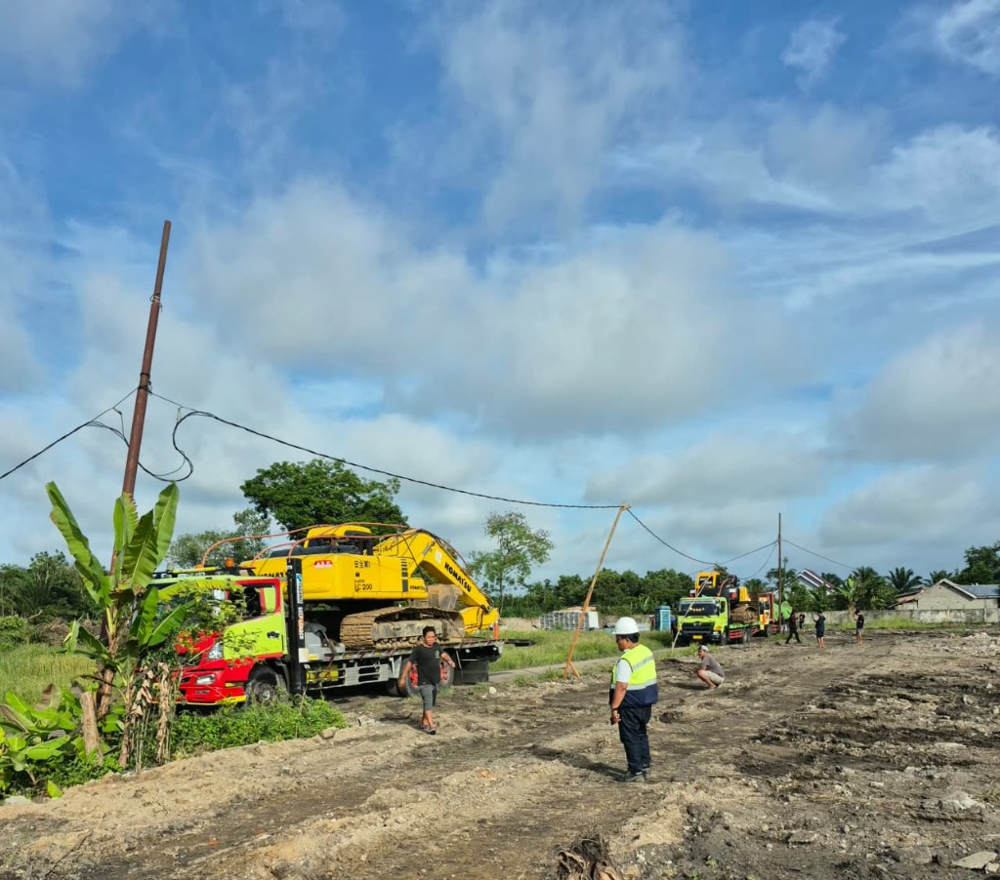

Pembangunan Sekolah Rakyat Sumsel
Deskripsi Proyek
Proyek ini merupakan bagian dari inisiatif Pemerintah Provinsi Sumatera Selatan untuk memperluas akses pendidikan berkualitas melalui pembangunan Sekolah Rakyat di wilayah Kabupaten Ogan Komering Ilir. PT. Tridaya Bakti Nusa dipercaya untuk menangani fondasi struktural utama proyek ini.
Lingkup pekerjaan utama mencakup mobilisasi alat berat pancang (*Piling Rig*), pengadaan tiang pancang beton berkualitas tinggi, serta eksekusi pemancangan presisi sesuai dengan titik koordinat rancang bangun. Tantangan geografis di wilayah OKI dikelola dengan perencanaan logistik yang matang dan penggunaan armada ekskavator modifikasi untuk memastikan kelancaran pengerjaan di medan yang bervariasi.
Hingga saat ini, pekerjaan terus berlangsung dengan pengawasan standar K3 yang ketat, menjamin integritas tiang fondasi di setiap titik bangunan sekolah rakyat ini.
Dokumentasi Proyek




